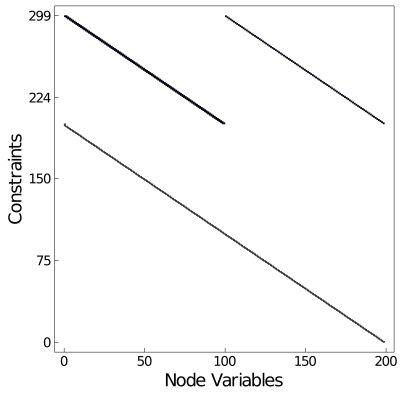
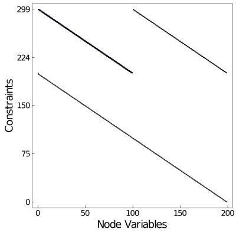
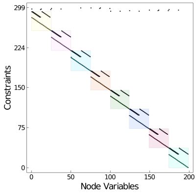
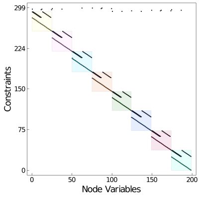

Graph Processing and Analysis
In Modeling with OptiGraphs we describe how to construct optigraphs using a bottom-up approach that manages problem structure using nodes, edges, and subgraphs. Plasmo.jl also supports managing optigraphs in a more top-down manner using graph analysis functions and interfaces to standard graph partitioning tools such as Metis and KaHyPar.
Illustrative Example: Dynamic Optimization
To help demonstrate some graph processing capabilities in Plasmo.jl, we construct a simple optimal control problem described by the following equations. In this problem, $x$ is a vector of states and $u$ is a vector of control actions which are both indexed over the set of time indices $t \in \{1,...,T\}$. The objective function minimizes the state trajectory distance from zero with minimal control effort, the second equation describes the state dynamics, and the third equation defines the initial condition. The last two equations define limits on the state and control actions.
\[\begin{aligned} \min_{\{ x,u \}} & \sum_{t = 1}^T x_t^2 + u_t^2 & \\ \textrm{s.t.} \quad & x_{t+1} = x_t + u_t + d_t, \quad t \in \{1,...,T-1\} & \\ & x_{1} = 0 &\\ & x_t \ge 0, \quad t \in \{1,...,T\}\\ & u_t \ge -1000, \quad t \in \{1,...,T-1\} \end{aligned}\]
This snippet shows how to construct the optimal control problem in Plasmo.jl. We create an optigraph, we add optinodes which contain states and controls at each time period, we setup objective functions for each node, and we use linking constraints to describe the dynamics (since each node represents a point in time). When we print the newly created optigraph for our optimal control problem, we see it contains about 200 optinodes (one for each state and control) and contains almost 100 linking constraints (which couple the time periods).
using Plasmo
T = 100 # number of time points
d = sin.(1:T) # disturbance vector (a sin wave)
graph = OptiGraph(;name=:optimal_control)
@optinode(graph, state[1:T])
@optinode(graph, control[1:T-1])
for node in state
@variable(node, x)
@constraint(node, x >= 0)
@objective(node, Min, x^2)
end
for node in control
@variable(node, u)
@constraint(node, u >= -1000)
@objective(node, Min, u^2)
end
@linkconstraint(graph, [i = 1:T-1], state[i+1][:x] == state[i][:x] + control[i][:u] + d[i])
JuMP.fix(state[1][:x], 0)
graph
# output
An OptiGraph
optimal_control #local elements #total elements
--------------------------------------------------
Nodes: 199 199
Edges: 99 99
Subgraphs: 0 0
Variables: 199 199
Constraints: 299 299
We can also plot the resulting optigraph (see [Plotting]) which produces a simple chain of optinodes.
using PlasmoPlots
plt_chain_layout = layout_plot(
graph,
layout_options=Dict(:tol=>0.1,:iterations=>500),
linealpha = 0.2,
markersize = 6
)
plt_chain_matrix = matrix_plot(graph) 

OptiGraph Projections
Plasmo.jl lets us query optigraph properties such as all_neighbors, induced_subgraph, and incident_edges. Before we can query any of these properties, we need to create a hypergraph representation of the optigraph using a Plasmo.GraphProjection. Specifically, we want to create a hypergraph projection using hyper_projection method.
julia> projection = hyper_projection(graph)
Graph Projection: Plasmo.HyperGraphProjectionType()
Plasmo.jl contains a few different Graph Projections. The hypergraph is the most natural representation of an optigraph and is used to perform most processing tasks such as querying neighbors and incident edges. Other projections can be useful for various graph analyses, but no examples exist right now beyond graph partitioning.
The next most useful projection is probably the clique_projection. This projection replaces each hyperedge with a set of standard edges to create a standard graph (where edges strictly connect 2 nodes). This projection internally contains a Graphs.SimpleGraph.
julia> clique_proj = clique_projection(graph)
Graph Projection: Plasmo.CliqueGraphProjectionType()
julia> clique_proj.projected_graph
{199, 297} undirected simple Int64 graph
Querying Topology
Once we have a projection we can run all sorts of methods to query the topology, many of which are extended from Graphs.jl. The below snippet demonstrates some of the primary methods. We first grab two nodes to start some examples.
julia> node1 = graph[1]
state[1]
julia> node2 = graph[2]
state[2]Remember, state[2] is a function of state[1] and control[1] based on our modeled equations. We can query the neighbors of node1 (state[1]) to confirm this.
julia> all_neighbors(projection, node1)
2-element Vector{OptiNode{OptiGraph}}:
state[2]
control[1]We can query the neighborhood around a node within a given distance (this function also returns the queried node). For this example we use a distance of 1. We can also query a neighborhood given a set of nodes.
julia> neighborhood(projection, [node1], 1)
3-element Vector{OptiNode{OptiGraph}}:
state[1]
state[2]
control[1]
julia> neighborhood(projection, [node1, node2], 1)
5-element Vector{OptiNode{OptiGraph}}:
state[1]
state[2]
control[1]
state[3]
control[2]
We can look at edges incident to a single node or set of nodes. Note that state[1] has one incident edge that connects it to control[1] and state[2]. We verify this by using all_nodes on the returned edge.
julia> node1_incident = incident_edges(projection, node1)
1-element Vector{OptiEdge{OptiGraph}}:
optimal_control.e1
julia> edge1_nodes = all_nodes(node1_incident[1])
3-element Vector{OptiNode}:
state[2]
state[1]
control[1]
julia> incident_edges(projection, [node1,node2])
2-element Vector{OptiEdge{OptiGraph}}:
optimal_control.e1
optimal_control.e2
We lastly show how to query the edges induced by a set of nodes. These are all edges that connect the given nodes.
julia> induced = induced_edges(projection, edge1_nodes)
1-element Vector{OptiEdge}:
optimal_control.e1
Assembling New OptiGraphs
A key capability that derives from graph topology queries is the ability to create new optigraphs from subsets of nodes and edges. This is primarily done with the assemble_optigraph(@ref) method which some topology functions implicity call. Here we show how to create new optigraphs using some of these methods.
julia> queried_nodes = neighborhood(projection, [node1], 5)
11-element Vector{OptiNode{OptiGraph}}:
state[1]
state[2]
control[1]
state[3]
control[2]
state[4]
control[3]
state[5]
control[4]
state[6]
control[5]
julia> queried_edges = induced_edges(projection, queried_nodes)
5-element Vector{OptiEdge}:
optimal_control.e1
optimal_control.e2
optimal_control.e3
optimal_control.e4
optimal_control.e5
julia> new_graph = assemble_optigraph(queried_nodes, queried_edges; name=:new_graph)
An OptiGraph
new_graph #local elements #total elements
--------------------------------------------------
Nodes: 11 11
Edges: 5 5
Subgraphs: 0 0
Variables: 11 11
Constraints: 17 17
You must pass valid nodes and edges to assemble_optigraph. All of the edges must be connected to the given nodes.
An easy alternative to using assemble_optigraph is to use induced_subgraph which takes a vector of nodes and does the above operations internally.
julia> new_graph = induced_subgraph(projection, queried_nodes; name=:induced_graph)
An OptiGraph
induced_graph #local elements #total elements
--------------------------------------------------
Nodes: 11 11
Edges: 5 5
Subgraphs: 0 0
Variables: 11 11
Constraints: 17 17
We can lastly expand a set of nodes to create a new graph. We can provide either a subgraph (an optigraph) or a set of nodes to expand with. This would look like the following:
julia> expanded_graph = expand(projection, new_graph, 1; name=:expanded_graph)
An OptiGraph
expanded_graph #local elements #total elements
--------------------------------------------------
Nodes: 13 13
Edges: 6 6
Subgraphs: 0 0
Variables: 13 13
Constraints: 20 20
julia> expanded_with_nodes = expand(projection, queried_nodes, 1; name=:expanded_nodes)
An OptiGraph
expanded_nodes #local elements #total elements
--------------------------------------------------
Nodes: 13 13
Edges: 6 6
Subgraphs: 0 0
Variables: 13 13
Constraints: 20 20
Partitioning OptiGraphs
Plasmo.jl supports partitioning optigraphs wherein partitions of nodes and edges can be used to assemble optigraphs that contain subgraphs. This allows users to reveal and create nested optigraph structures that would be difficult (or impractical) to formulate otherwise. Plasmo.jl takes care of creating new optigraphs given partition information.
Since the OptiGraph is a hypergraph at its core, it naturally should interface to various partitioning tools (both standard and hypergraph partitioning). To begin however, we show how to partition an optigraph manually by defining vectors of node partitions.
We first define our manual partition as a vector of vectors. Each internal vector contains the optinodes that correspond to a time interval. In this case, we assemble a vector of 5 time intervals. Using our vector we can construct a Partition object which denotes node and edge partitions and how they are connected.
julia> all_graph_nodes = all_nodes(graph);
julia> node_vectors = [[state[1:20];control[1:20]],[state[21:40];control[21:40]],[state[41:60];control[41:60]],[state[61:80];control[61:80]],[state[81:100];control[81:99]]];
julia> manual_partition = Partition(graph, node_vectors)
OptiGraph Partition w/ 5 subpartitions
Once we construct a Partition, we can assemble a new optigraph from the nodes using assemble_optigraph. Notice that the new graph contains few local elements (just the 4 edges that connect the new subgraphs).
julia> new_manual_graph = assemble_optigraph(manual_partition; name=:partitioned_graph)
An OptiGraph
partitioned_graph #local elements #total elements
--------------------------------------------------
Nodes: 0 199
Edges: 4 99
Subgraphs: 5 5
Variables: 0 199
Constraints: 4 299
We can also modify an existing graph using apply_partition! versus creating a new graph. This can be useful for reducing memory requirements but it keep in mind it fundamentally alters the optigraph structure. Also note that this method is somewhat experimental; we suggest using assemble_optigraph if performance is not critical.
We now demonstrate how to use the hypergraph partitioning with KaHyPar.jl using the hyper_projection we created above. The general workflow is straightforward:
julia> using KaHyPar
julia> using Suppressor # suppress KaHyPar output
julia> partition_vector = @suppress KaHyPar.partition(projection, 8, configuration=:connectivity, imbalance=0.01);
julia> partition_kahypar = Partition(projection, partition_vector)
OptiGraph Partition w/ 8 subpartitions
julia> kahypar_graph = assemble_optigraph(partition_kahypar; name=:kahypar_graph)
An OptiGraph
kahypar_graph #local elements #total elements
--------------------------------------------------
Nodes: 0 199
Edges: 7 99
Subgraphs: 8 8
Variables: 0 199
Constraints: 7 299
In this case, we ended up with a similar partition to the manual one (where instead we ask for 8 partitions as KaHyPar makes it easy to do so). In most cases, the best partition is not this obvious.
KaHyPar does not currently build on Windows. If you are interested in using graph partitioning with Plasmo.jl, read on to see how you can use Metis.
Plasmo.jl contains a direct interface to KaHyPar which is used here. In general, a user can always construct the manual partition vector however they wish and generate a Partition object.
As a final example, we show how one might use Metis to partition this optigraph using the clique_projection presented earlier.
julia> using Metis
julia> clique_proj
Graph Projection: Plasmo.CliqueGraphProjectionType()
julia> simple_graph = clique_proj.projected_graph
{199, 297} undirected simple Int64 graph
julia> metis_vector = Int64.(Metis.partition(simple_graph, 5)); # Plasmo.jl requires Int64 vectors.
julia> partition_metis = Partition(clique_proj, metis_vector)
OptiGraph Partition w/ 5 subpartitions
julia> metis_graph = assemble_optigraph(partition_metis; name=:metis_graph)
An OptiGraph
metis_graph #local elements #total elements
--------------------------------------------------
Nodes: 0 199
Edges: 4 99
Subgraphs: 5 5
Variables: 0 199
Constraints: 4 299
If we plot and of the above partitioned optigraphs, it reveals five distinct partitions and the coupling between them. The plots show that the partitions are well-balanced and the matrix visualization shows the problem is reordered into a banded structure that is typical of dynamic optimization problems.
plt_chain_partition_layout = layout_plot(
kahypar_graph,
layout_options=Dict(
:tol=>0.01,
:iterations=>500
),
linealpha=0.2,
markersize=6,
subgraph_colors=true
)
)
plt_chain_partition_matrix = matrix_layout(kahypar_graph, subgraph_colors=true)
 

Aggregating OptiGraphs (Experimental)
Optigraphs can be converted into stand-alone optinodes using the using the aggregate and aggregate_to_depth functions. This can be helpful when the user models using optigraphs, but they want to represent subproblems using optinodes. In the snippet below, we aggregate our optigraph that contains 5 subgraphs. We include the argument 0 which specifies how many subgraph levels to retain. In this case, 0 means we aggregate subgraphs at the highest level so graph contains only new aggregated optinodes. For hierarchical graphs with many levels, we can define how many subgraph levels we wish to retain. The function returns a new aggregated graph (aggregate_graph), as well as a reference_map which maps elements in aggregate_graph to the original optigraph graph.
julia> aggregate_graph, reference_map = aggregate_to_depth(kahypar_graph, 0; name=:agg_graph);
julia> aggregate_graph
An OptiGraph
agg_graph #local elements #total elements
--------------------------------------------------
Nodes: 8 8
Edges: 7 7
Subgraphs: 0 0
Variables: 199 199
Constraints: 299 299
A user can also use aggregate! to permanently aggregate an existing optigraph. This avoids maintaining a copy of the original optigraph.
We can lastly plot the aggregated graph structure which simply shows 8 optinodes with 7 linking constraints.
plt_chain_aggregate = layout_plot(
aggregate_graph,
layout_options=Dict(:tol=>0.01,:iterations=>10),
node_labels=true,
markersize=30,
labelsize=20,
node_colors=true
);
plt_chain_matrix_aggregate = matrix_plot(
aggregate_graph,
node_labels=true,
node_colors=true
);